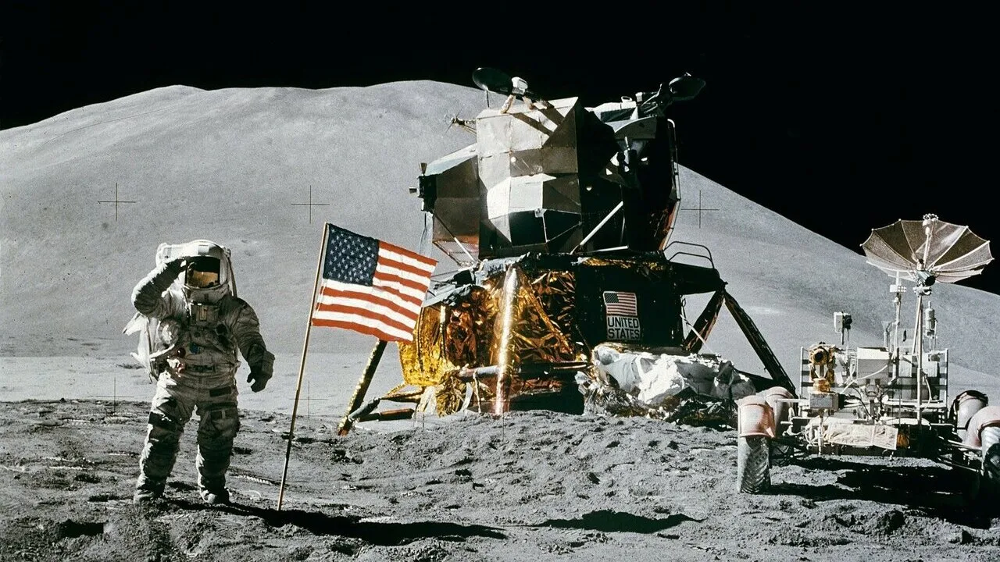
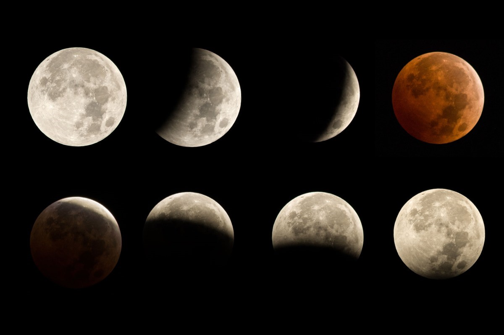

La Luna, nata circa 4,6 miliardi di anni fa, è l’unico satellite naturale della Terra, il nostro “vicino di casa” nello spazio. Dal primo sbarco sulla Luna avvenuto il 21 Luglio 1969 è stato possibile conoscere in modo più accurato la sua struttura, le caratteristiche dei materiali presenti e le differenze con il nostro pianeta.La Luna ha una notevole influenza sui cicli biologici della Terra e sulla misurazione del tempo: la sua attrazione gravitazionale, ad esempio, permette un rallentamento della rotazione terrestre da 6 ore a 24. La ripartizione del tempo in intervalli, fin dall’antichità, è stata stabilita considerando proprio il moto della Luna e del Sole. Tale suddivisione è nota come Calendario. Esiste appunto un Calendario lunare, detto anche Lunario, che riporta le fasi lunari, le lune ascendenti o discendenti, le eclissi e i segni zodiacali in cui sta transitando la Luna. Il Lunario si basa esclusivamente sui cicli della Luna e ha una durata inferiore all’anno solare: inizia, infatti, con il mese di Novembre e finisce con il mese di Ottobre. Anche le maree sono fortemente influenzate dalla Luna: le maree, infatti, si alzano e si abbassano due volte al giorno per l’attrazione gravitazionale della Luna sugli oceani, causando un rallentamento della rotazione terrestre. In tabella sono indicate le principali caratteristiche della Luna
il 20 luglio 1969 i tre astronauti americani dell'Apollo 11 atterrarono sulla Luna. Poche ore più tardi, quando in Italia erano le 4:56 del 21 luglio 1969, il comandante della missione Neil Armstrong posava il primo piede umano sul suolo lunare: "Questo è un piccolo passo per uomo, un gigantesco balzo per l'umanità". Fu quindi raggiunto dal compagno di viaggio Edwin Aldrin, detto 'Buzz', mentre in orbita intorno alla Luna, a bordo della capsula madre 'Columbia', restò ad aspettarli il terzo astronauta della Missione, Michael Collins. La prima passeggiata lunare fu trasmessa in diretta televisiva per un pubblico mondiale. Apollo 11 concluse la corsa allo spazio intrapresa dagli Stati Uniti e dall'Unione Sovietica nello scenario più ampio della guerra fredda, realizzando l'obiettivo nazionale che il presidente degli Stati Uniti John F. Kennedy aveva definito il 25 maggio 1961 in occasione di un discorso davanti al Congresso degli Stati Uniti: "prima che finisca questo decennio, di far atterrare un uomo sulla Luna e farlo tornare sano e salvo sulla Terra".
L'abbiamo vista o ne abbiamo sentito parlare almeno una volta nella vita: l'eclissi lunare è un particolarissimo fenomeno astronomico (anzi, più precisamente ottico-astronomico) per il quale il nostro satellite si oscura, arrivando in certi casi persino a scomparire e mantenendo a malapena un sottile disco chiaro che sembra formare un anello pallido nel cielo notturno. Per molto tempo, diverse tradizioni popolari lo indicavano come una sorta di momento magico-mistico, ma (come possiamo ben immaginare) si tratta in realtà di un evento perfettamente spiegabile che, pur non perdendo il suo fascino, ha a che fare con la "semplice" interposizione della Terra fra la Luna e il Sole.
